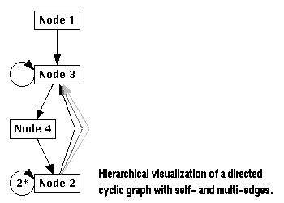

Graphs
uDraw(Graph) is an interactive tool to visualize directed graphs. A graph is a structure with a number of objects (nodes) and relationships between them (edges). For directed graphs, all edges have a direction, i.e. for each edge there is a parent node (the source) and a child node (the target). The graph layout in uDraw(Graph) reflects these hierarchical relationships by arranging the nodes on horizontal levels so all parent nodes are above their child nodes and all edges point downwards (in a top-down layout). Further, the direction of an edge is usually visualized by an arrow pointing to the child node. This kind of representation is called hierarchical visualization of a directed graph.
Although hierarchical visualization is only possible for non-cyclic graphs, uDraw(Graph) is also able to handle cyclic graphs where each cycle is broken by inverting the direction of one edge. This way, a cyclic graph is transformed into an acyclic one which can be handled by the hierarchical layout algorithm.
Graphs are loaded in uDraw(Graph) using a format called term representation. Note: files containing a uDraw(Graph) term representation should always have suffix ".udg". The term representation format supports all kind of directed graphs: cyclic or acyclic graphs, empty graphs, graphs with only one level (a list of nodes without any edges), multi-edges (two or more edges between two nodes) or even self-edges (edges where the parent and child node are the same). The term representation is a plain text ASCII format, so uDraw(Graph) graphs can even be created with an ordinary text editor. But normally this is not done by hand. Instead, graphs are generated automatically by some application program connected to the API.
Next: Applications using the API.